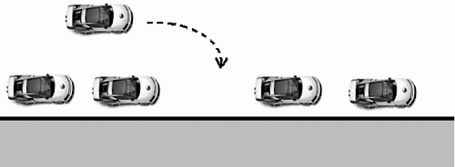
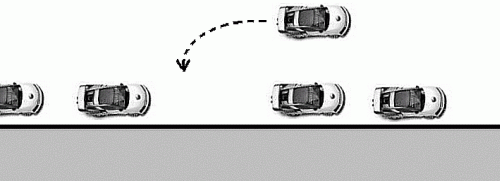
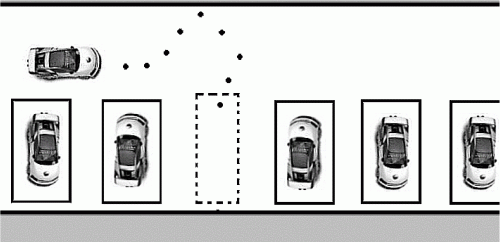

О парковке
Совет № 71 Занимая место на парковке, думайте не только о себе, но и том другом водителе, который не сможет припарковаться, если вы заняли два или полтора места
С каждым днем количество автомобилей на наших дорогах растет, а вот сами дороги, как и окружающее их пространство, больше не становятся. Постарайтесь занять как можно меньше места. Но и перегибать палку не нужно. Не забывайте, что вам еще нужно выйти из машины, а вы наверняка не сможете этого сделать, если слишком плотно припарковали свой автомобиль. Да и дверцу в этом случае вам могут поцарапать ненароком.
Совет № 72 Старайтесь всегда припарковывать автомобиль задним ходом. В этом случае вам будет проще выбраться с парковки. К тому же этим вы сэкономите несколько драгоценных минутВедь как оно все бывает – опаздываешь на встречу (или выходишь впритык), а какой-то троглодит поставил машину криво. Если вы припарковались как обычно (не задним ходом), тогда для выезда с парковки и объезда той криво припаркованной машины вам придется двигаться задним ходом, что не только неудобно, но и опасно, учитывая, что зеркала заднего вида не совсем точно передают расстояние до объектов, которые в них отражаются.
Совет № 73 Старайтесь выбрать тот тип парковки, который наиболее уместен в данной ситуацииПарковка бывает трех типов:
• параллельно проезжей части;
• перпендикулярно проезжей части;
• под углом к проезжей части.
Параллельная парковка
Параллельная парковка – наиболее сложная, поскольку нужно учитывать:
• Расстояние между передним и задним автомобилями – вы должны убедиться, что хватит места для парковки вашего автомобиля. Место должно хватить с запасом, ведь вам не только нужно припарковать свой автомобиль, но и выровнять его, а потом и выехать с парковки.
• Расстояние от бордюра до вашего автомобиля – если наедете на бордюр, то можете поцарапать диск, а если поставите машину далеко от бордюра, то ее могут поцарапать другие машины, особенно на узких улицах.

Рис. 4. Параллельная парковка.
Алгоритм параллельной парковки будет следующий:
• Нужно убедиться, что места для вашего автомобиля достаточно.
• Заезжаем передом, как обычно.
• Скорее всего, вы встанете неровно и впритык к следующему автомобилю. Поэтому сдайте назад, одновременно выравнивая автомобиль. Если вы паркуетесь с той же стороны, как и автомобиль на рис. 4, то вам нужно вывернуть руль вправо и сдавать назад, постепенно возвращая руль в положение «прямо» (если вы паркуетесь с другой стороны дороги – тогда руль нужно будет выворачивать влево).
• После этого, скорее всего, вы будете стоять практически ровно, но широко – от бордюра до вашего автомобиля будет много места. Сдайте вперед, вывернув руль вправо, – так вы максимально приблизитесь к бордюру.
• Затем сдаем назад и выравниваем машину – ваша машина стоит ровно (ну, практически ровно).
• После этого посмотрите, сможете ли вы выехать и сможет ли выехать автомобиль, который сзади вас.

Рис. 5. Параллельная парковка задним ходом.
Если расстояние от вашего автомобиля до того, который сзади вас, маленькое, тогда нужно протянуть немного вперед (смотрите, чтобы сами потом смогли выехать).
На рис. 4 изображен сложный случай, когда вам нужно уместиться между двумя припаркованными автомобилями. Если места достаточно, то все просто, а вот если места впритык, тогда вам будет еще сложнее. В этом случае вам нужно будет проехать вперед и парковать машину задним ходом (рис. 5), потому как вы можете управлять передними колесами, а задними – нет.
Перпендикулярная парковка. Заезд в гараж
Казалось, что тут сложного? Выровнял машину перпендикулярно дороге и ровно заехал, стараясь никого не задеть. Ясно, что нужно знать габариты машины, чтобы можно было не только заехать, не сломав зеркала заднего вида, но и чтобы можно было выйти из машины. Но что делать, если место ограниченно? Например, напротив парковки стена или второй ряд машин (что часто бывает на стоянке). Тогда вам поможет разобраться траектория, изображенная на рис. 6.

Рис. 6. Перпендикулярная парковка.
Нужно не сразу заезжать между стоящими машинами, иначе можно срезать угол и не заехать вообще (или, что еще хуже, поцарапать чью-то машину). Нужно вывернуть руль в противоположную сторону (в нашем случае влево), чтобы был достаточный радиус для парковки, затем заехать между двумя машинами, постепенно ровняя свою машину.
Перпендикулярная парковка аналогична заезду в гараж, только роль стоящих по бокам машин выполняют ворота гаража.
Парковка под углом к проезжей части
С моей точки зрения, это самый простой способ парковки – меньше нужно ровнять машину, да и под углом заехать проще, чем перпендикулярно, поскольку нужно меньше расстояния для заезда машины. Если вы справляетесь с перпендикулярной парковкой (по сути, это тоже парковка под углом, только угол равен 90 градусов), то вы без проблем справитесь с парковкой под углом.